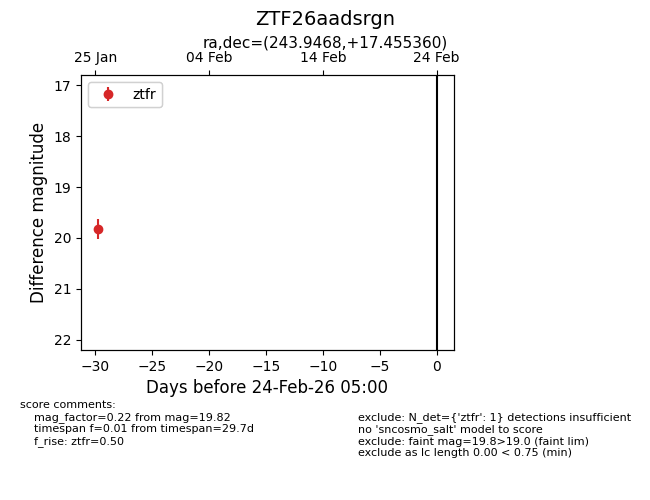
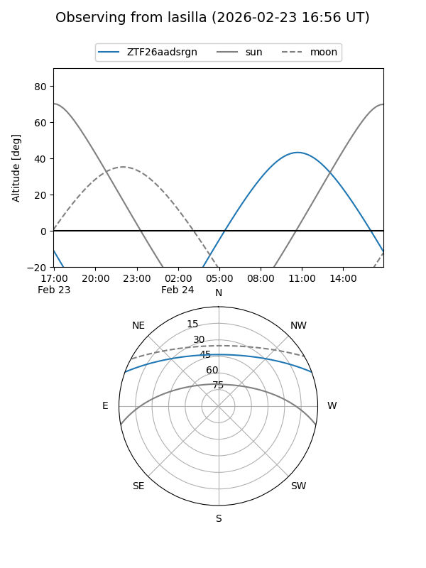
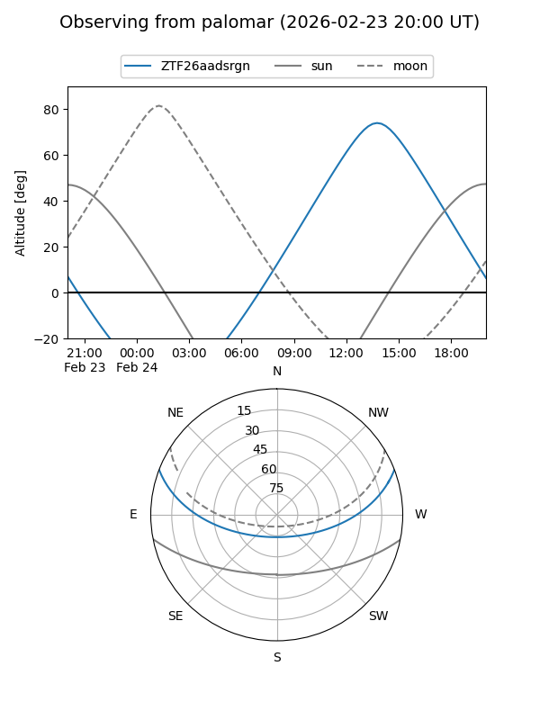

ZTF26aadsrgn
Target ZTF26aadsrgn at 2026-01-25 11:36
Aliases and brokers:
FINK: link
Lasair: link
ALeRCE: link
alt names
ZTF26aadsrgn (ztf,fink_ztf)
Coordinates:
equatorial (ra, dec) = 243.9468,+17.45536
equatorial (HMS+DMS) = 16:15:47.23,+17:27:19.30
galactic (l, b) = (32.4482,+42.07233)
Flags:
Photometry:
last ztfr=19.82
1 ztfr detections
Lightcurve

Visibility


Additional plots